Querying a chTKCat instance with an AI assistant (MCP server)
Patrice Godard
October 16, 2026
Source:vignettes/TKCat-MCP.Rmd
TKCat-MCP.RmdIntroduction
TKCat provides a Model Context Protocol (MCP) server which lets an AI assistant (e.g. Claude Code, Claude Desktop or any other MCP client) explore and query the modeled databases (MDBs) available in a chTKCat instance.
The assistant takes advantage of the information documented in each MDB: the general description of the resource, the data model with table and field comments, primary and foreign keys, and the collection members used to integrate different MDBs.
The server is written in R and can be used in two ways:
-
Local server (
chTKCat_mcp_server()): the server is launched by the MCP client on the user’s computer and communicates with it through the standard input and output (stdio transport). It connects to the chTKCat instance, which can be local or remote. See the Local server section. -
Remote server
(
chTKCat_mcp_http_server()): the server runs as a service on a remote machine, usually next to the chTKCat instance, and remote MCP clients connect to it through HTTPS (Streamable HTTP transport). Users don’t need R nor TKCat on their computer. See the Remote server section.
Available tools
| Tool | Description |
|---|---|
list_mdbs |
List the MDBs with their title, description, version, size and access level |
search_tkcat |
Search MDBs, tables and fields by keyword (relies on
search_MDB_tables() and
search_MDB_fields()) |
describe_mdb |
General information, tables (with format and dimensions), relationships and collection members of an MDB |
describe_tables |
Detailed data model of tables: fields, R and ClickHouse types, keys, indexes, collection members |
preview_table |
First records of a table or of a matrix |
query_mdb |
Run a read-only ClickHouse SQL SELECT query on an
MDB |
get_matrix_values |
Get values from a matrix table for selected rows and/or columns |
list_collections |
Collections of concepts (e.g. genes, conditions) and their members in the different MDBs |
In query_mdb, the tables of the MDB are referred to by
their names in the data model (e.g. SELECT * FROM genes).
Tables of other MDBs can be referred to as `MDB`.`table` to
integrate several resources in the same query.
Read-only access
The server can only read data. It cannot write, create or delete anything and it cannot modify grants:
- The ClickHouse session is opened with the
readonly = 2setting. ClickHouse rejects any query modifying data, tables, databases, users or grants, and this setting cannot be changed during the session. - SQL statements are checked before being sent to ClickHouse: only
single
SELECTqueries (possibly starting withWITH) are accepted, withoutSETTINGSnorINTO OUTFILEclauses and without table functions accessing external resources (e.g.url(),file(),s3(),remote()). - The server only accesses the MDBs readable by the ClickHouse user used for the connection.
Local server (stdio)
Requirements
- R (>= 4.1) and the TKCat package (version >= 1.3.0) installed on the computer running the MCP client:
install.packages("TKCat")
## or the development version
devtools::install_github("patzaw/TKCat")The
Rscriptcommand must be available in thePATH(otherwise use its full path in the configurations below, e.g.C:\\Users\\user_name\\AppData\\Local\\Programs\\R\\R-4.6.1\\bin\\Rscript.exeon Windows).A chTKCat instance reachable from this computer.
ClickHouse user
The server connects to chTKCat with the credentials provided in the following environment variables:
| Variable | Description | Default |
|---|---|---|
TKCAT_HOST |
chTKCat host | localhost |
TKCAT_PORT |
chTKCat HTTP port | 9111 |
TKCAT_USER |
ClickHouse user | default |
TKCAT_PASSWORD |
user password | "" |
TKCAT_HTTPS |
use HTTPS (TRUE or FALSE) |
FALSE |
The default user gives access to the public MDBs only.
To access private MDBs, it is recommended to use a dedicated user
without any admin right, created by a chTKCat administrator:
library(TKCat)
k <- chTKCat(host = "localhost", port = 9111, user = "admin_user")
create_chTKCat_user(k, login = "mcp_user", contact = NA, admin = FALSE)
## Give access to a private MDB
add_chMDB_user(k, mdb = "Private_MDB", login = "mcp_user", admin = FALSE)Checking the server
The following command, run in a terminal, starts the server. It
should write a message such as chTKCat MCP server ready and
then wait for MCP requests on its standard input (stop it with
Ctrl+C).
The MCP Inspector can be used to try the tools interactively (requires Node.js):
Configuring an MCP client
Claude Code
Register the server with the claude mcp add command
(--scope user makes it available in all your projects):
claude mcp add tkcat --scope user \
-e TKCAT_HOST=localhost -e TKCAT_PORT=9111 \
-e TKCAT_USER=mcp_user -e TKCAT_PASSWORD=xxxxxx \
-- Rscript -e "TKCat::chTKCat_mcp_server()"Check that the server is connected with claude mcp list
or with the /mcp command within Claude Code.
To share the configuration with the other members of a project, a
.mcp.json file can be added at the root of the project.
Credentials should not be written in this file: they can be taken from
the environment of each user with the ${VARIABLE}
syntax.
Server parameters
The chTKCat_mcp_server() function has additional
parameters which can be set in the R expression given to
Rscript:
-
maxRows: maximum number of rows returned by a query (default: 1000). -
maxChars: maximum number of characters returned by a tool call (default: 60000). Longer outputs are truncated. -
maxExecutionTime: maximum execution time of a query in seconds (default: 300).
For example:
Remote server (HTTP)
Architecture
The remote server is run as a service on a machine which can reach the chTKCat instance (usually the same machine). A reverse proxy (nginx) provides HTTPS and forwards the requests to one or several instances of the R server listening on the local interface only:

-
Authentication. Users authenticate with their own
chTKCat credentials sent in an HTTP Basic
Authorizationheader. The credentials are checked by ClickHouse and each user only accesses the MDBs they are allowed to read. The server does not store any credential on disk. - Stateless. The server does not create MCP sessions and answers each request with a single JSON response. Several instances can thus run in parallel behind nginx: since R processes one request at a time, running several instances avoids a long query blocking the other users.
- Read-only. The same tools and the same read-only protections as for the local server are applied to each user connection.
Running the server
On the server machine, install R and TKCat in a site library (available to the user running the service). Then the server can be started with:
TKCAT_HOST=localhost TKCAT_PORT=9111 TKCAT_MCP_PORT=8801 \
Rscript -e "TKCat::chTKCat_mcp_http_server()"The main parameters of chTKCat_mcp_http_server() are the
following (see ?chTKCat_mcp_http_server for the complete
list):
| Parameter | Description | Default |
|---|---|---|
mcpHost |
Listening address |
TKCAT_MCP_HOST or 127.0.0.1
|
mcpPort |
Listening port |
TKCAT_MCP_PORT or 8800
|
mcpPath |
Path of the MCP endpoint | /mcp |
host, port, https
|
chTKCat connection |
TKCAT_HOST, TKCAT_PORT,
TKCAT_HTTPS
|
anonymousUser |
ClickHouse user used for requests without credentials
(e.g. "default" to give access to public MDBs without
authentication) |
TKCAT_MCP_ANONYMOUS_USER or NA
(authentication required) |
anonymousPassword |
Password of anonymousUser
|
TKCAT_MCP_ANONYMOUS_PASSWORD or ""
|
allowedOrigins |
Accepted values of the Origin header (only sent by web
browsers) |
NULL (requests with an Origin header are
rejected) |
maxRows, maxChars,
maxExecutionTime
|
Same as for the local server |
1000, 60000, 300
|
cacheTime |
Seconds during which user connections and data models are kept in memory | 3600 |
Keep the default mcpHost = "127.0.0.1" when the server
is behind nginx on the same machine: the R server does not provide HTTPS
and must not be directly reachable from the network.
Tool calls are logged on the standard error output with the time, the client address, the user and the name of the tool:
2026-10-10 14:46:51 - 10.1.2.3 - jdoe - query_mdbRunning the server as a systemd service
The following systemd template unit, saved as
/etc/systemd/system/tkcat-mcp@.service, runs an instance of
the server on the port given as instance name. It is run by a dedicated
system user (tkcat-mcp) without any privilege.
[Unit]
Description=chTKCat MCP server (port %i)
After=network-online.target
Wants=network-online.target
[Service]
User=tkcat-mcp
Group=tkcat-mcp
Environment=TKCAT_HOST=localhost
Environment=TKCAT_PORT=9111
Environment=TKCAT_MCP_HOST=127.0.0.1
Environment=TKCAT_MCP_PORT=%i
EnvironmentFile=-/etc/tkcat-mcp.env
ExecStart=/usr/local/bin/Rscript -e "TKCat::chTKCat_mcp_http_server()"
Restart=on-failure
RestartSec=5
NoNewPrivileges=true
PrivateTmp=true
ProtectSystem=strict
ProtectHome=read-only
[Install]
WantedBy=multi-user.targetAnonymous access is configured in the optional
/etc/tkcat-mcp.env file (the leading - in
EnvironmentFile=- makes it optional: without this file,
authentication is required for all the requests). This file is read by
systemd before dropping privileges: it can thus be readable by root
only, which keeps the password out of the command line and out of the
files readable by the tkcat-mcp user.
Create the system user, protect the environment file and start, for example, 4 instances:
sudo useradd --system --no-create-home --shell /usr/sbin/nologin tkcat-mcp
sudo chown root:root /etc/tkcat-mcp.env
sudo chmod 600 /etc/tkcat-mcp.env
sudo systemctl daemon-reload
sudo systemctl enable --now tkcat-mcp@8801 tkcat-mcp@8802 tkcat-mcp@8803 tkcat-mcp@8804
## Logs
sudo journalctl -u 'tkcat-mcp@*' -fnginx configuration
The following configuration, saved for example as
/etc/nginx/conf.d/tkcat-mcp.conf, provides HTTPS,
distributes the requests among the server instances and limits the
request rate by client (which also slows down password guessing
attempts). Replace tkcat.example.com and the certificate
paths with your own values.
limit_req_zone $binary_remote_addr zone=tkcat_mcp:10m rate=5r/s;
## R MCP server instances (see the systemd service above)
upstream tkcat_mcp_inst {
least_conn;
server 127.0.0.1:8801;
server 127.0.0.1:8802;
server 127.0.0.1:8803;
server 127.0.0.1:8804;
keepalive 8;
}
## Other config commands
## ...
server {
## Other config commands
## ...
## TKCat MCP server
location = /tkcat_mcp {
limit_req zone=tkcat_mcp burst=20 nodelay;
client_max_body_size 1m;
proxy_pass http://tkcat_mcp_inst/mcp;
proxy_http_version 1.1;
proxy_set_header Connection "";
proxy_set_header Host $host;
## Client address used in the logs of the R server
proxy_set_header X-Forwarded-For $remote_addr;
proxy_set_header X-Forwarded-Proto $scheme;
## Must be longer than the maxExecutionTime of the R server
proxy_read_timeout 330s;
proxy_send_timeout 330s;
proxy_buffering off;
}
## ...
}Check and reload the configuration:
The Authorization header is forwarded by nginx without
modification. Do not enable nginx access logs with request bodies or
headers: they would record the credentials and the queries of the
users.
Checking the server
The server can be checked with curl (-u
provides the credentials in a Basic Authorization
header):
curl -u jdoe:xxxxxx https://tkcat.example.com/tkcat_mcp \
-H "Content-Type: application/json" \
-H "Accept: application/json, text/event-stream" \
-d '{"jsonrpc":"2.0","id":1,"method":"tools/call","params":{"name":"list_mdbs","arguments":{}}}'The server answers with:
- 200 and a JSON-RPC response for MCP requests;
- 202 for notifications;
- 401 if the credentials are missing or wrong;
-
403 for requests with a non-allowed
Originheader; - 405 for methods other than POST (no server-sent event stream);
- 502 if the chTKCat instance cannot be reached.
Configuring remote MCP clients
Users provide their chTKCat credentials as the Base64 encoding of
user:password, which can be computed in a terminal or in
R:
jsonlite::base64_enc("jdoe:xxxxxx")Claude Code
claude mcp add tkcat --scope user --transport http \
https://tkcat.example.com/tkcat_mcp \
--header "Authorization: Basic amRvZTp4eHh4eHg="In a project .mcp.json file shared with other users, the
credentials can be taken from the environment of each user (here from a
TKCAT_MCP_AUTH environment variable with the Base64
value):
Other MCP clients
Any MCP client supporting the Streamable HTTP transport and custom
headers can connect to https://tkcat.example.com/tkcat_mcp
with the Authorization header described above.
Clients supporting only the stdio transport (e.g. Claude Desktop with a local configuration file) can use a bridge such as mcp-remote (requires Node.js; check that third-party tools are allowed by your organization):
{
"mcpServers": {
"tkcat": {
"command": "npx",
"args": [
"-y",
"mcp-remote", "https://tkcat.example.com/tkcat_mcp",
"--header", "Authorization:${TKCAT_MCP_AUTH}"
],
"env": {
"NODE_OPTIONS": "--use-system-ca"
}
}
}
}The NODE_OPTIONS environment variable set to
--use-system-ca tells Node.js to trust the certificate
authorities (CA) installed in the operating system certificate store. By
default, Node.js only relies on its own bundled list of public CAs.
Thus, if the certificate of the nginx server is signed by an internal CA
of your organization (or if the HTTPS traffic is inspected by a
corporate proxy), the connection fails with errors such as
unable to get local issuer certificate or
self-signed certificate in certificate chain. This option
requires a recent version of Node.js (>= 22.15). With older versions,
the NODE_EXTRA_CA_CERTS environment variable can be set
instead, with the path to a PEM file containing the internal CA
certificate(s). The env entry can be removed if the server
certificate is signed by a public CA.
Connectors added in the web interface of claude.ai are connected from Anthropic’s cloud: they would require the server to be reachable from the internet and to support OAuth authentication, which is not provided by this server.
Usage
Once the server is configured, questions can be asked in natural language. For example:
- Which resources provide information about gene expression in tissues?
- What is the data model of the GTEx MDB?
- In which tissues is the SCN1A gene the most expressed according to GTEx?
- Which MDBs can be integrated with HGNC through gene identifiers?
The assistant generally follows this workflow:
- It identifies relevant MDBs with
list_mdbsandsearch_tkcat. - It reads the description and the data model of these MDBs with
describe_mdbanddescribe_tables. - It looks at a few records with
preview_table. - It answers the question with
query_mdborget_matrix_values, possibly combining several MDBs thanks to the collection members (list_collections).
Security considerations
- Data returned by the tools are sent to the AI assistant. Only configure the server with a user accessing MDBs whose content can be shared with the AI service you are using, according to your organization’s policies.
- The password is stored in plain text in the configuration of the MCP
client (environment variables or Base64-encoded
Authorizationheader, which is not encrypted): use a dedicated user with read-only access to the relevant MDBs only. - Use HTTPS (
TKCAT_HTTPS=TRUE) when connecting to a remote chTKCat instance. - With the remote server:
- always use HTTPS between the clients and nginx: Basic credentials are sent in clear text otherwise;
- keep the R server listening on the local interface
(
127.0.0.1) and expose it only through nginx; - restrict the access to the internal network when possible and consult your security team before exposing the service;
- setting
anonymousUsergives access to the corresponding MDBs to anyone reaching the server.
- Messages and errors are written on the standard error output, which is generally available in the logs of the MCP client (local server) or in the service logs (remote server).